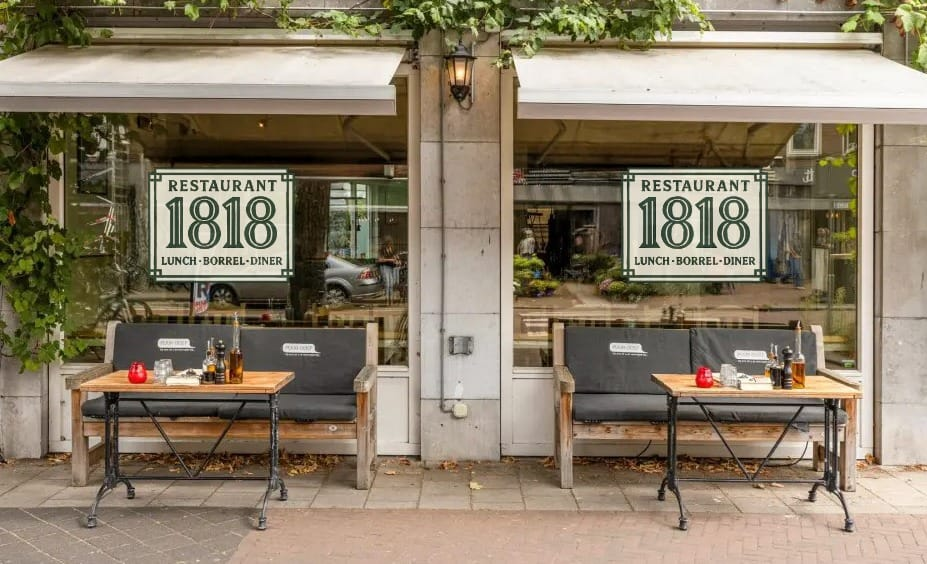
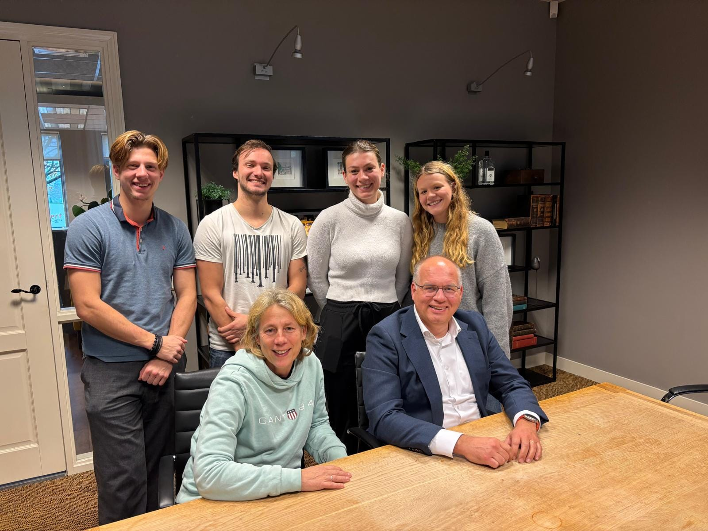

Elke dag, 16.00 tot 17.00 uur
Happy hour
40% korting
op alles wat we schenken, van koffie tot wijn. Even bijkomen voordat de avond begint.

Een familierestaurant om samen van het leven te genieten. Goed eten, mooie wijnen en een ontspannen sfeer. Toegankelijk, lokaal en met een verfijnd randje.
Maandag vanaf 16.00 uur
Dinsdag t/m zondag vanaf 10.00 uur
Elke dag happy hour 16.00 tot 17.00 uur, 40% korting op alles wat we schenken
Van een broodje carpaccio tussen de middag tot boeuf bourguignon in de avond. Bij bijna elk gerecht staat een wijntip van ons.
Broodje carpaccio13,00
Met gemengde sla, truffelmayonaise, gesnipperde rode ui, geroosterde pijnboompitten, Parmezaanse kaas en rucola
Broodje geitenkaas11,00
Met gemengde sla, honing, geroosterde walnoten, perzik
bacon +1,50
Broodje spicy chicken11,50
Met gemengde sla, kippendijen, spicy saus en zoetzure ui
Broodje pulled pork11,00
Met gemengde sla, zoetzure ui en BBQ saus
Clubsandwich kip12,50
Met kruidenmayo, ijsbergsla, gegrilde kip, belegen kaas, komkommer, tomaat en gekookt ei
bacon +1,50
Clubsandwich zalm15,00
Met bieslookroomkaas, ijsbergsla, gerookte zalm, komkommer, tomaat en gekookt ei
Rundvleeskroketten met brood11,00
Vega kroketten met brood12,00
Uitsmijter11,50
Keuze uit: ham en/of kaas
bacon +1,50
Couscoussalade15,00
Met geroosterde pompoen, geroosterde walnoten, geitenkaas-sinaasappelmelange
Kip-spinazie salade15,00
Met spinazie, geroosterde kip, honingvinaigrette, komkommer, krokante kikkererwten, gesnipperde ui en gepofte cherrytomaten
1818 Burger18,50
Met sla, tomaat, rode ui, 1818 saus, cheddar en frietjes
bacon +1,50
1818 Gegratineerde portobello burger15,00
Een gemarineerde portobello met sla, tomaat, rode ui, gorgonzola en frietjes
Tosti ham/kaas5,50
Tosti kaas4,50
Soep van het moment7,00
Rundercarpaccio14,00
Met truffelmayonaise, rode ui, geroosterde pijnboompitten, Parmezaanse kaas en rucola
Schola Sarmenti, Primitivo (Italië)
Rode bietencarpaccio12,00
Met geitenkaas-sinaasappelcrème, veldsla, perzik en geroosterde walnoten
Collicento, Pinot Grigio (Italië)
Tonijncarpaccio14,00
Met een krokantje van filodeeg, sesamzaadjes, wasabimayo, cress, gefrituurde kappertjes en bieslook
Pigoudet, Provence Rosé (Frankrijk)
Soep van het moment7,50
Burrata15,00
Met gepofte tomaat, balsamico, geroosterde pijnboompitten, olijfolie en veldsla
Markowitsch, Grüner Veltliner (Oostenrijk)
Steaktartaar13,00
Met gepofte cherrytomaat, veldsla, croutons en toast
Schola Sarmenti, Primitivo (Italië)
Zalmtartaar12,00
Van gravad lax met gepofte cherrytomaat, veldsla, croutons en toast
Pigoudet, Provence Rosé (Frankrijk)
Pulled pork in bladerdeeg12,00
Met zoetzure ui en BBQ saus
Coto de Hayas, Crianza/Tempranillo (Spanje)
Gestoofde tongscharfilet19,00
Met gebakken cantharellen, saffraanroomsaus, peterselie
Orimos, Chardonnay (Frankrijk)
1818 Burger18,50
Met sla, tomaat, rode ui, 1818 saus, cheddar en frietjes
bacon +1,50
Coto de Hayas, Crianza/Tempranillo (Spanje)
1818 Gegratineerde portobello burger15,00
Een gemarineerde portobello met sla, tomaat, rode ui, gorgonzola en frietjes
Schola Sarmenti, Primitivo (Italië)
Bavette24,00
Met seizoensgroenten en frietjes, keuze uit pepersaus of kruidenboter
Felino, Cabernet Sauvignon (Argentinië)
Ravioli18,00
Gevuld met aubergine, met paddenstoelenroomsaus en rucola
Orimos, Chardonnay (Frankrijk)
Boeuf bourguignon24,00
Met aardappelpuree
Château de Lastours, Syrah "Arnaud de Berre" (Frankrijk)
Gekonfijte eendenbout21,50
Met zuurkool en aardappelpuree
Stéphane Ogier, Côtes-du-Rhône (Frankrijk)
Saté van hertenbiefstuk23,50
Met wildsaus, aardappelpuree en seizoensgroente
Stéphane Ogier, Côtes-du-Rhône (Frankrijk)
Couscoussalade15,00
Met geroosterde pompoen, geroosterde walnoten, geitenkaas-sinaasappelmelange en spinazie
Stéphane Ogier, Côtes-du-Rhône (Frankrijk)
Kip-spinazie salade15,00
Met spinazie, geroosterde kip, honingvinaigrette, komkommer, krokante kikkererwten, gesnipperde ui en gepofte cherrytomaten
Stéphane Ogier, Côtes-du-Rhône (Frankrijk)
Shared plank voor 2 personen60,00
Met 1818 burger, bavette, friet, pepersaus, gamba's, ribstukjes en side salade
Château de Lastours, Syrah "Arnaud de Berre" (Frankrijk)
Raclette25,00 p.p.
Met brood, serranoham, aardappels, druiven, vijgenchutney, paprika, cornichons en zilveruitjes
Markowitsch, Grüner Veltliner (Oostenrijk)
Elke maand zet onze keuken één gerecht op de kaart dat er verder niet op staat. Geen vaste formule, wel altijd wat het seizoen op dat moment te bieden heeft.
Bijvoorbeeld: eendenborst met aardappelpuree, knolselderij en rode wijn-sinaasappelsaus.
Wisselend. Vraag onze medewerkers naar de vis van vandaag en de prijs.
Appelcrumble met vanille-ijs5,50
Tschida, Auslese (Oostenrijk)
Duo mousse10,00
Chocolademousse en baileyscrème met hazelnoot-chocoladecrumble
Bodegas Málaga, Pedro Ximénez (Spanje)
Bosvruchtenparfait8,50
Met hazelnoot-chocoladecrumble
Carvalhas, Tawny Reserva
Kaasplankje9,00
Barbeito, Madeira Boal (Portugal)
Panna cotta7,50
Met karamelsaus en stroopwafel
Bodegas Málaga, Pedro Ximénez (Spanje)
1818 Smulkluis5,50
2 bolletjes ijs van De IJskluis, slagroom en sprinkles, diverse smaken
Van een fijne kop koffie met huisgemaakte taart tot een koud biertje of een mooi glas wijn. Onze drankkaart en de wijnkaart voor deze winter staan hieronder; bij de gerechten vind je steeds een wijntip die erbij past.
Elke dag van 16.00 tot 17.00 uur: 40% korting op alles wat we schenken, van koffie tot wijn.
Heb je een allergie of dieetwens? Laat het ons even weten.
Elke dag, 16.00 tot 17.00 uur
40% korting
op alles wat we schenken, van koffie tot wijn. Even bijkomen voordat de avond begint.
Elke derde dinsdag van de maand
Stel je team samen, schuif aan en kijk hoe ver jullie kennis jullie brengt. Inschrijven kan op de avond zelf vanaf 20.00 uur, we starten om 20.30 uur en rond 22.30 uur weten we wie er wint.
Wil je vooraf eten? Reserveer dan even een tafel.
Restaurant 1818 is het avontuur van één Utrechtse familie, ontstaan vanuit een liefde voor horeca, goed eten en de buurt waarin we zelf al jarenlang thuis zijn. We runnen het samen met ons gezin en een geweldig team. Persoonlijk, levendig en een beetje alsof je thuis bent.
Binnen de Utrechtse singels bruist het leven. Aan de oostkant van de stad, in het buurtgerecht Abstede, zorgen boeren, tuinders en ambachtslieden voor het beste verse eten, dat via de Abstederpoort de stad binnenkomt.
Abstede maakt de stap naar een zelfstandige gemeente: het moment waarop de buurt op eigen benen gaat staan. De eigenheid van de buurt is gebleven.
Abstede hoort onlosmakelijk bij Utrecht en is nog steeds een plek waar mensen zorgen voor elkaar en voor de stad. En juist daar zit Restaurant 1818, aan de Adriaen van Ostadelaan.

Ondernemerschap, horeca-ervaring en creativiteit komen bij ons samen in het runnen van een eigen restaurant als gezin. Een restaurant waar we zelf graag naartoe zouden gaan: ontspannen, ongedwongen en samen het leven vieren.
We geloven in goed eten, een fijne sfeer en persoonlijke aandacht. Waar het kan werken we samen met lokale leveranciers en met de wijk, om bij te dragen aan Utrecht Oost.
Op het goede leven. Op de buurt. Op 1818.
Adriaen van Ostadelaan 22
3583 AJ Utrecht
| Maandag | vanaf 16.00 |
|---|---|
| Dinsdag t/m zondag | vanaf 10.00 |
| Donderdag t/m zaterdag | 11.00 – 22.00 |
|---|---|
| Dinsdag, woensdag en zondag | 11.00 – 21.00 |
| Maandag | tot 21.00 |
Bel ons of stuur een bericht, dan regelen we een tafel voor je. Voor de lunch, de borrel of het diner.